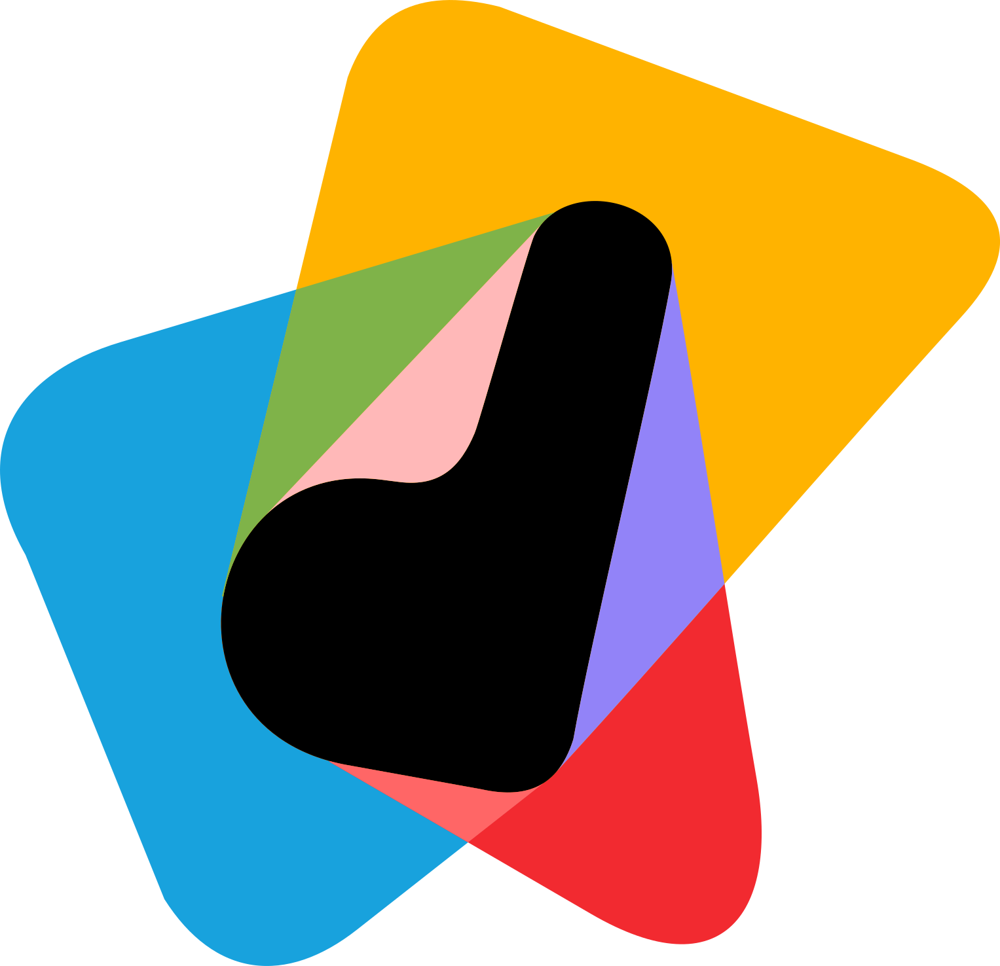

Hello
I design complex products
that feel simple to use.
I'm Sumit, a product designer. I've worked on telecom and consumer apps at scale, and for the last four years mostly in fintech, from helping first-time investors feel confident to making dense financial data easy to read.
- Now
- Design Lead at Flyra
- Before
- Dream11, 4 years
- Experience
- Nearly 8 years
- Based in
- Mumbai, open to relocation
Selected work
Work that started out complicated, and how it got simple.
How I work
How I think through a problem, in the order I actually work.
-
01
Start with the people
Before I open Figma, I sit with PMs, engineers and stakeholders to pin down who the user really is, what success means for the business, and what we can't change: tech, compliance and deadlines. Hard limits come out on day one, not in week six.
-
02
Find where it breaks
I take apart how competitors solve the problem and read support tickets and app reviews, where users say plainly what's wrong. When that isn't enough, I go deeper: at Dream11, mixed-methods research showed users doubted winner results were genuine.
-
03
Settle debates with prototypes
When requirements get messy, I send sharp questions back to the PM and put lo-fi wireframes and prototypes in front of the team. It's easier to agree on something everyone can click than on a paragraph in a PRD.
-
04
Close every edge case
I flag edge cases from the first conversation, and this is where I close them: empty, loading and error states, and the user who does it backwards. Then the small details, so engineers get specs they can build and the product feels effortless.
Experience
7 years 11 months in design, from client work at agencies to owning products end to end.
-
Flyra8 mos
- Design LeadMar 2026 to now
Only product designer across the consumer app, the business dashboard and the internal Ops Console, directing work with an external design partner.
-
Dream114 yrs 2 mos
- Product Designer IIIJul 2024 to Mar 2026
- Product Designer IIJul 2022 to Jul 2024
- Product Designer IFeb 2022 to Jul 2022
Took Dream Money from 0 to 1, from UPI bill payments to an investing platform. Redesigned the winner list and profile tab on the core Dream11 app. Started on the SaaS feature-flag platform.
-
Lollypop Design Studio1 yr 11 mos
- Associate Senior UI DesignerAug 2021 to Feb 2022
- UI DesignerApr 2020 to Aug 2021
Worked on Vodafone Idea's rebrand to Vi across web and app, then built the Figma foundations that kept it consistent.
-

Dreamscape Media1 yr 4 mos- UI/UX DesignerDec 2018 to Mar 2020
Designed for client projects, from updates to an OTT streaming platform to a pre-flight app that lets private aircraft owners check their plane before take-off.
About
I'm happiest when a complicated product stops feeling complicated, and nobody can quite say why.
I got here through front-end code first, then agency work on Vi's rebrand, four years at Dream11, and now leading design at Flyra.
Before shipping anything, I ask one question: how would I feel using this?
Outside work, I write about design on Instagram as Finishing Touch.